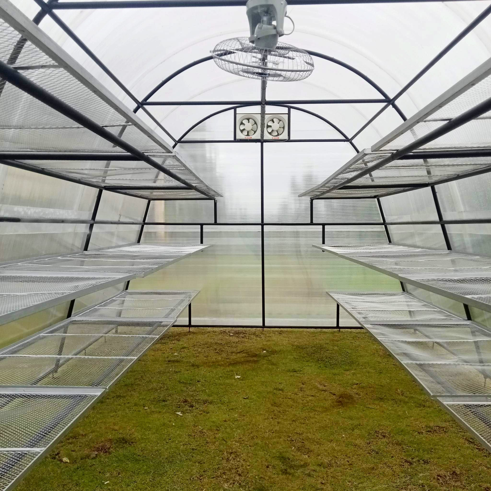

Five Shepherds Corporation manufactures high-quality vacuum frying systems that help farmers, entrepreneurs, cooperatives and food processors transform fresh agricultural produce into premium value-added products.
Helping farmers and food processors add value to agricultural products through innovative food processing technology.
Five Shepherds Corporation was established in 2024 with the goal of providing dependable food processing equipment for Philippine agriculture.
We specialize in manufacturing vacuum frying systems that preserve natural color, flavor and nutrients while reducing oil absorption, enabling businesses to create premium snack products.
Our commitment extends beyond selling machines—we provide technical guidance, installation support, and after-sales service to help customers succeed.
Learn More →Year Established
Opening Hours
Leyte, Philippines
Designed for commercial food processors, farmers, cooperatives and research institutions.

Our flagship vacuum fryer is engineered for entrepreneurs and institutions looking to produce premium vacuum-fried fruit and vegetable chips while preserving natural flavor, nutrients and color.
| Capacity | 12 kg Sweet Potato / Batch |
| Material | Food Grade Stainless Steel |
| Operation | Semi Automatic |
| Vacuum System | Industrial Vacuum Pump |
| Heating | Electric |
| Support | Installation & Training |
Vacuum frying significantly reduces oil absorption, resulting in a lighter and healthier snack.
Preserves the vibrant color of fruits and vegetables by frying at lower temperatures.
Retains the natural flavor and aroma of fresh produce for premium-quality products.
Create export-quality products that command higher prices and increase profitability.
Create premium value-added products while preserving natural flavor, color and nutrients.
Produce crispy premium banana chips with excellent color.
Maintain natural sweetness and color using vacuum frying.
Create export-quality tropical fruit snacks.
Ideal for premium sweet potato chips with low oil content.
Healthy vegetable chips with vibrant natural color.
Transform ripe jackfruit into delicious crispy snacks.
Add value to locally grown agricultural products.
Suitable for many fruits and vegetables.
Engineered using food-grade stainless steel for durability and hygiene.
Installation, operator training and after-sales service throughout the Philippines.
Designed to reduce operating costs while maintaining excellent product quality.
Helping farmers and entrepreneurs increase the value of agricultural produce.
Established
Kg Capacity
% Customer Support
After Sales Assistance
Contact Five Shepherds Corporation today to learn how our vacuum frying technology can help transform agricultural products into premium value-added food products.
Request a Free Quotation